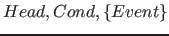
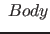
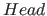
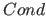
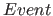
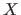
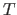

Next: Example Up: Overview Previous: Example Contents
=>
where  is an actor pattern,  is an optional condition,  is a non-empty set of event patterns separated by ',', and is an action. For an actor and an event, an action rule is said to be applicable if the actor matches and is true. A predicate for actors cannot contain backtrackable rules.
An event channel is an attributed variable to which actors can be attached, and through which events can be posted to actors. A channel has four ports: ins, bound, dom, and any. An event pattern in specifies the port to which the actor is attached. The event pattern ins() attaches the actor to the ins-port of channel , and the actor will be activated when is instantiated. The event pattern event(,) attaches the actor to the dom-port of channel . The built-in post_event(,) posts an event term to the dom-port of channel . After an event is posted to a port of a channel, the actors attached to that port are activated. For an activated actor, the system searches for an applicable rule and executes the rule body if it finds one. After execution, the actor is suspended, waiting to be activated again by other events. Picat does not provide a built-in for detaching actors from channels. An actor fails if no rule is applicable to it when it is activated or the body of the applied rule fails. An actor becomes a normal call once a normal non-backtrackable rule is applied to it.